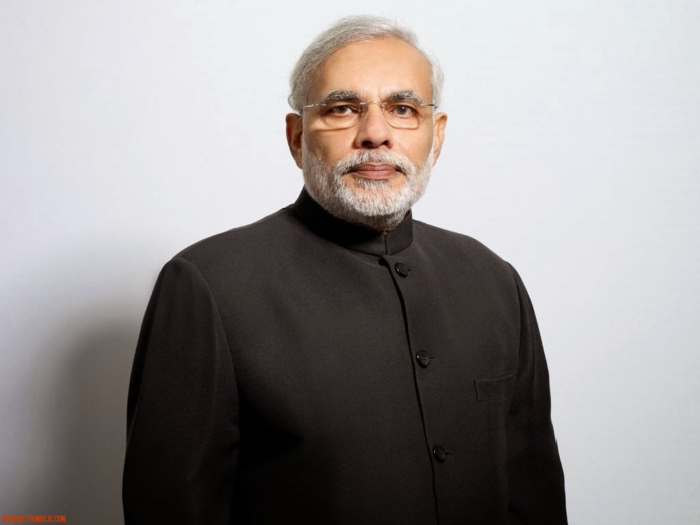
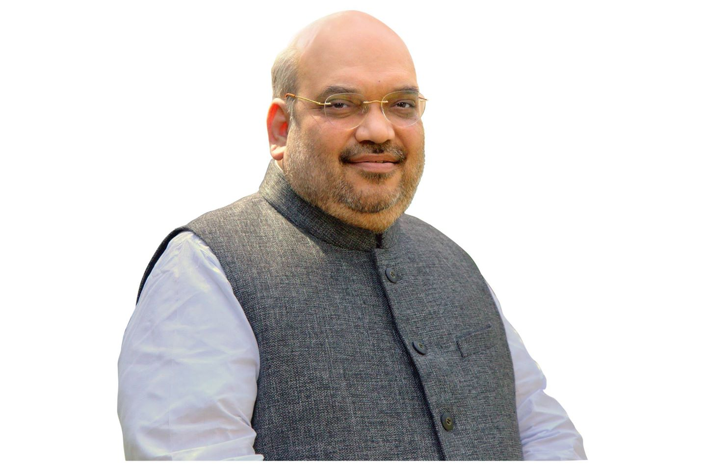
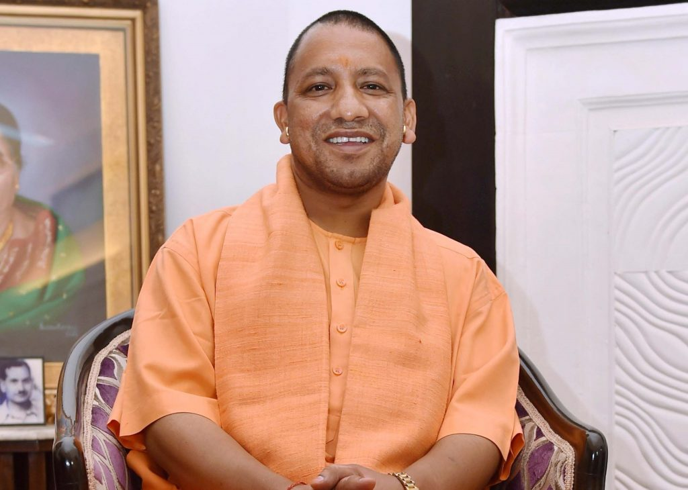
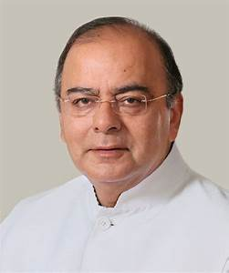

Bharatiya Janata Party | |
|  | Narendra ModiNarendra Damodardas Modi (born 17 September 1950) is an Indian politician who is the 16th and current Prime Minister of India, in office since May 2014. As a child, Modi helped his father sell tea at the Vadnagar railway station, and later ran a tea stall with his brother near a bus terminus. Modi became an RSS sambhag pracharak (regional organiser) in 1978, overseeing RSS activities in the areas of Surat and Vadodara, and in 1979 he went to work for the RSS in Delhi. |
|---|---|
|  | Amit ShahAmit Anil Chandra Shah (born 22 October 1964) is an Indian politician currently serving as President of the Bharatiya Janata Party (BJP) and as a member of the Rajya Sabha. Shah was elected as an MLA from Sarkhej in four consecutive elections: 1997, 1998, 2002 and 2007. He is a close associate of Prime Minister Narendra Modi |
|  | Yogi AdityanathYogi Adityanath (born Ajay Mohan Bishton 5 June 1972) is an Indian monk and Hindu nationalist politician who is the current Chief Minister of Uttar Pradesh, in office since 19 March 2017. |
|  | Arun JaitleyArun Jaitley (born 28 December 1952) is an Indian politician and Advocate, who is the current Finance Minister and Minister of Corporate Affairs under Prime Minister Narendra Modi. A member of the Bharatiya Janata Party, Jaitley previously held the cabinet portfolios of Commerce and Industry and Law and Justice in the Vajpayee government (1998–2004) and served as the Minister of Defence in the Narendra Modi government as additional charge. From 2009 to 2014 |
Project Developed and Designed
By
Mohandeep Bawa & Paramjeet Kaur Student of Rayat Bahra Campus, Patiala